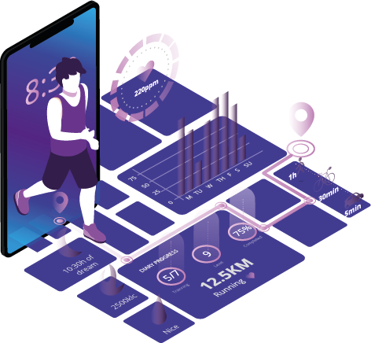
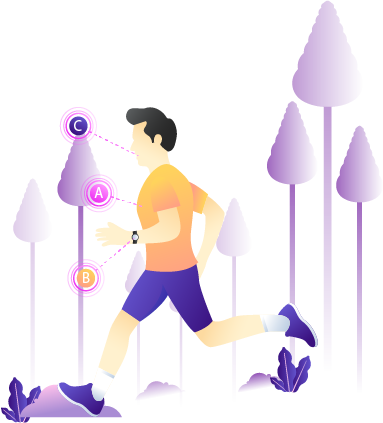

Desarrollado por:
Jorge Moreno / Jonathan Alvarez

Un sistema de monitoreo de los signos vitales permite a los deportistas ver el estado de sus signos vitales y a su vez sirve como indicador para variar la intensidad del ejercicio físico. A nivel regional los trabajos realizados sobre este tipo de sistema son escasos, se ha encontrado a través de las revisiones bibliográficas realizadas para conocer lo que se ha desarrollado en esta área que hay muy poca información del diseño e implementación de sistemas de monitoreo de signos vitales, por tal razón, esto nos ha llevado a la necesidad de realizar este proyecto con el fin de desarrollar este tipo de sistema en nuestra región de Santander.
Con este proyecto se pretende aplicar los conocimientos adquiridos en la ingeniería electrónica para dar respuesta a la siguiente pregunta de investigación:
¿Cómo se podría realizar un sistema supervisor de signos vitales y geoposición para deportistas a través de sensores y microcontroladores basado en el internet de las cosas?
Para responderla se plantea desarrollar un sistema de monitoreo de signos vitales y geoposicionamiento para deportistas basado en el internet de las cosas a través de un dispositivo portable, usando una base de datos de recepción configurada con protocolos de comunicación. El desarrollo de este proyecto nos permite plantear la siguiente hipótesis: el diseño e implementación de un sistema de monitoreo de los signos vitales a través de sensores y microcontroladores, permite a los deportistas monitorear en tiempo real sus signos vitales y geoposición durante la práctica deportiva.
La temperatura normal del cuerpo humano se establece típicamente entre 36.5–37.5 °C
La frecuencia cardíaca se expresa en pulsaciones por minuto.
Un nivel de saturación de oxígeno normal oscila entre el 95 % y el 100 %.
Coordenadas, velocidad, velocidad promedio, velocidad máxima
